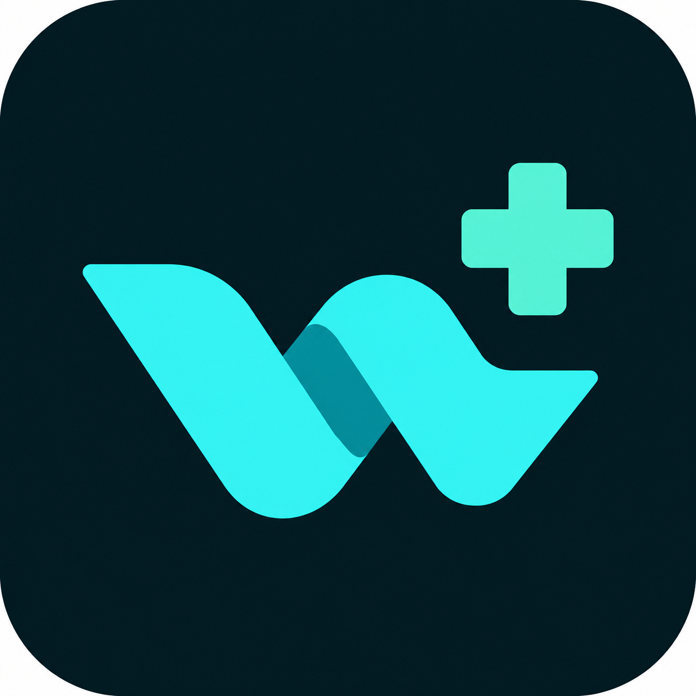
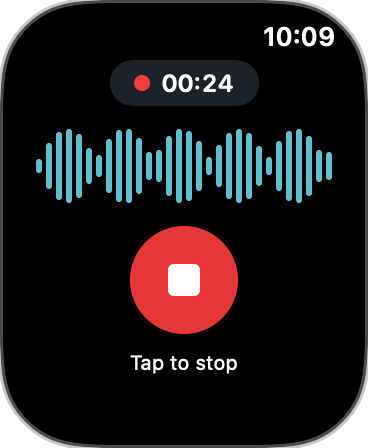
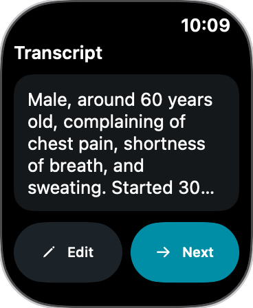
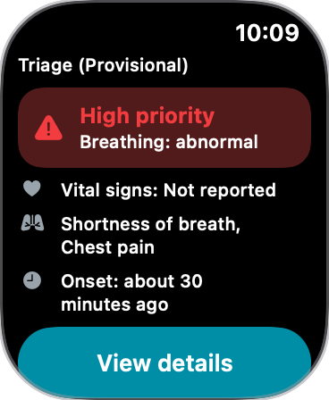
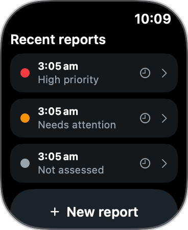
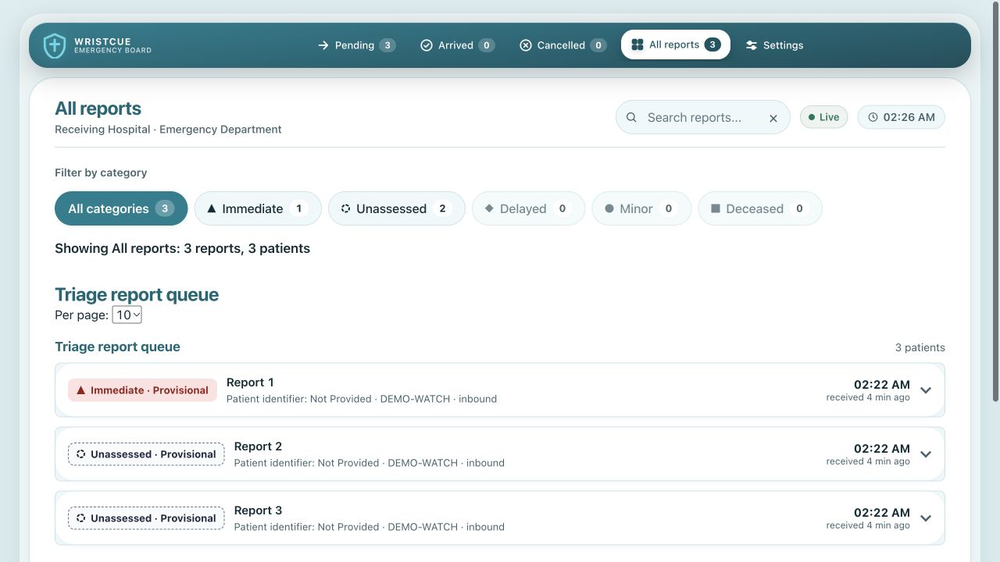

WristCue
Prototype · synthetic demonstration
Every moment
matters.
A voice report starts here.
Voice into view
WristCue
Put your voice to work.
01 / Voice report
Tap to
record.
The real watch interface.
Review the transcript.
Voice → Transcript


02 / Local processing
Processed
locally.
Provisional · human review required
Saved on your watch.


Your report. In view.
03 / Hospital board

WristCue
Voice → Transcript → Triage
Apple Watch prototype